| |
Emperor Review
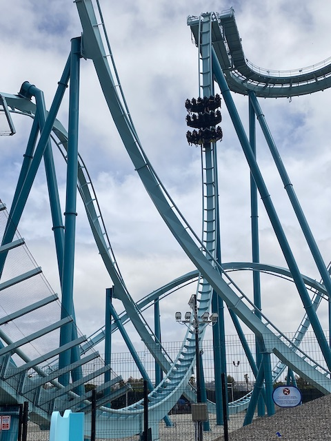
For today's review, we are heading to Sea World San Diego to review Emperor. This is the parks B&M Dive Coaster and my personal favorite coaster at the park. Now these were once really rare rides, but have recently become a lot more common. But regardless, this is still a lot of fun and is honestly one of the best Dive Machines for its size. So yeah. Let's hop in the extra-wide cars, pull down the OTSRs, and we're off. We roll around a turn and begin to climb up the lifthill. It's a pretty steep lifthill thanks to it being a dive coaster. And as always, steep lifthills are always better than ordinary lifthills. The steeper, the better. =) Though before you know it, we're at the top going around a turn at the top. There's really not much of a view. It's just dirt all below you. Yeah. Sea World, please give this ride some landscaping. Seriously, this is on par with Scream as far as plopped down feelings go. We approach the first drop, stop at the top. And then....we drop. And....it's a really good first drop. It's a Dive Machine first drop. Those are almost always the same, with the only real difference being in size. The bigger, the better. You get a nice pop of airtime and go into "Falling Mode", where all you can think about is the fact that you're falling. Eventually, we reach the ground and have a decent amount of speed. We then rise up into an Immelmann. Now at this point, this feels like a minature version of some of the bigger Dive Machines, like Sheikra. It's still a lot of fun and has some forces. But at this point, it's gonna branch out and become its own ride. We then head right into an overbanked turn. And....this is NOT a snoozer cruiser element just used to turn us around and burn off some speed. No, this has a little bit of whip to it. Ooh. I like that. We then head up into a Zero-G Roll. There's not a ton of whip here. But what we do have is cool. You still get some laterals in the Zero-G Roll. But not only that, you go straight from that into a curved drop to the ground. This continues our laterals and gives us some more speed. That's really nice. A big plus on this ride. And from here, we head straight into a corkscrew. And I say! There's a good snap in here. It's pretty forceful. I dare say that this is reminiscent of the early B&Ms that were extremely forceful and everyone raved about. OK. It's not quite as intense as those, but it still has a bit of a bite to it and is definately stronger than the average coaster they come out nowadays (at least that they open in America nowadays. They still make INSANELY forceful rides overseas). We then head around a banked turn and.....sadly slide right into the brake run. That's the one downside of this ride. It's really short. I know Dive Machines aren't exactly the longest rides, but this one really feels particuarly short. And that's a real bummer. But what it lacks in length, it gains in force. It's a short, but sweet ride. It packs more of a punch than certain larger Dive Machines. I guess I like it more than other enthusiasts as others like it, but don't seem to love it. And yeah. It's not perfect by any means. There are better coasters. But at the end of the day, it's still a fantastic little B&M Dive Machine and is my pick for the best roller coaster in San Diego. Definately be sure to give this a ride when you're visiting Sea World San Diego.
8/10
Location: Sea World San Diego
Opened: 2022
Built by: B&M
Last Ridden: September 19, 2022
Emperor Photos
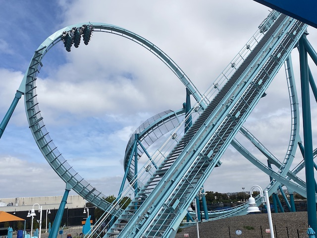
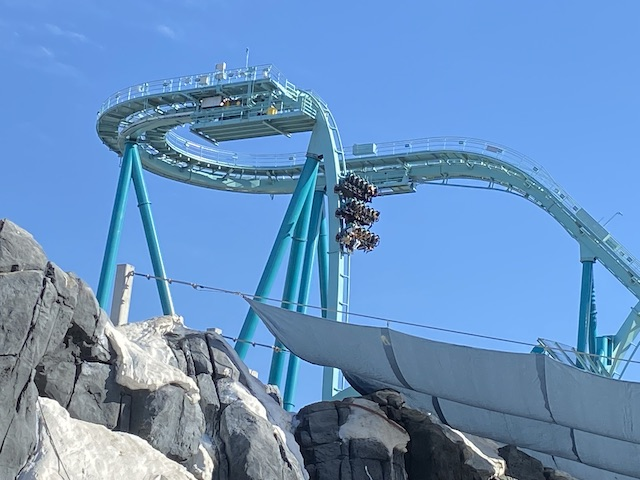
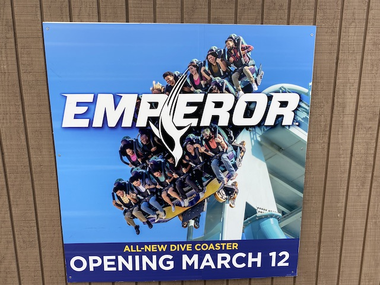
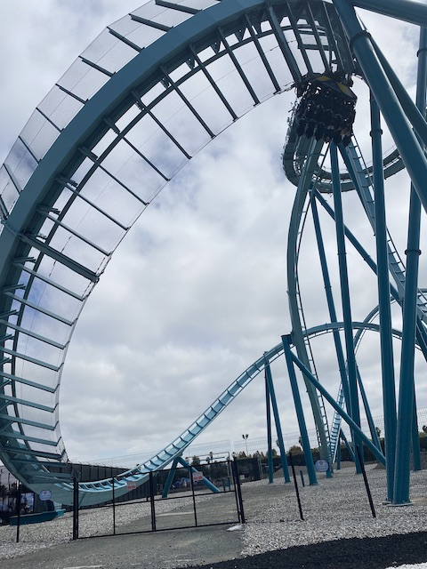
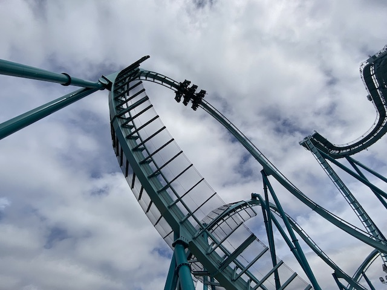
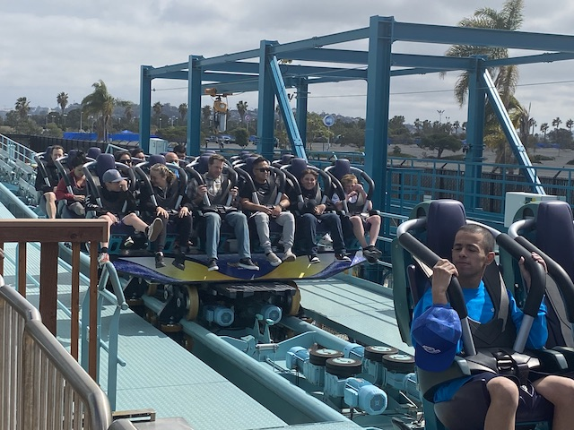
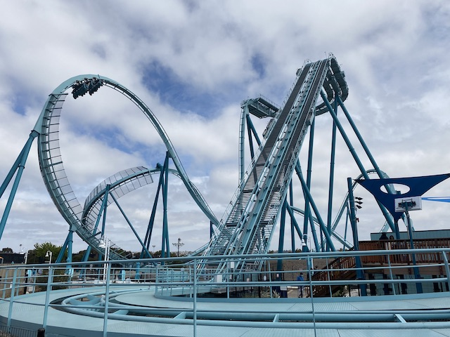
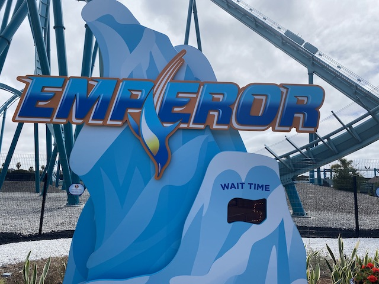
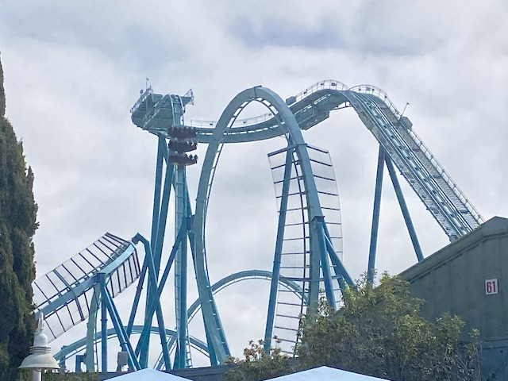
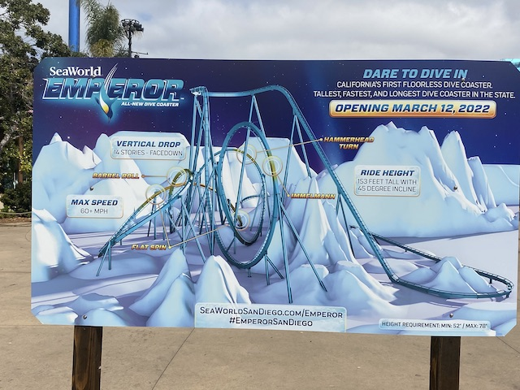
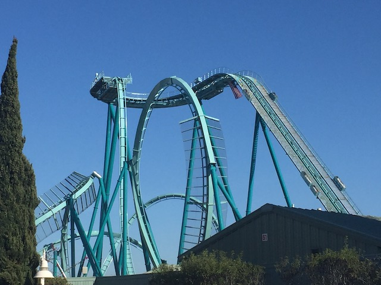
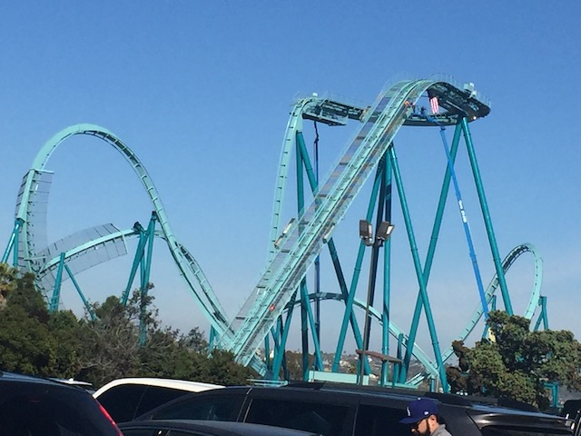
Home
|